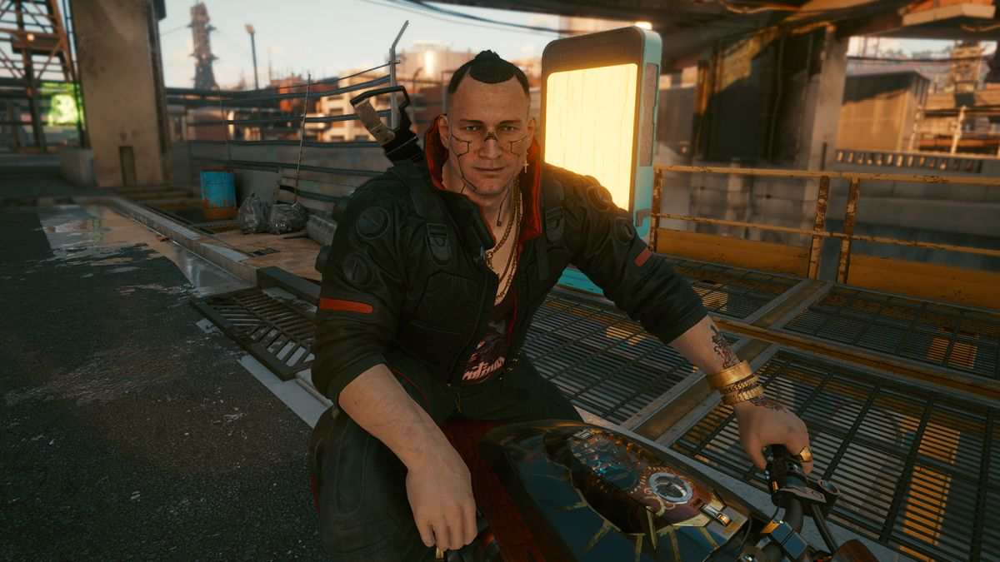
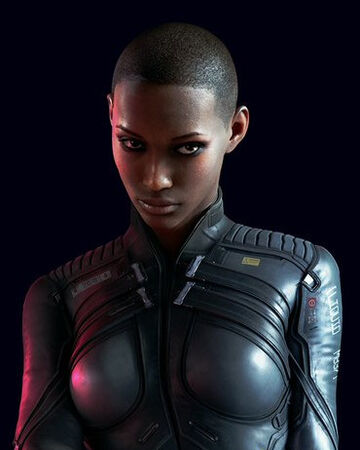
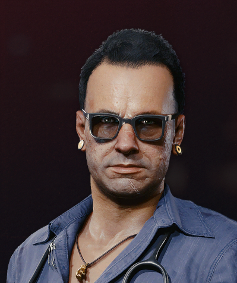
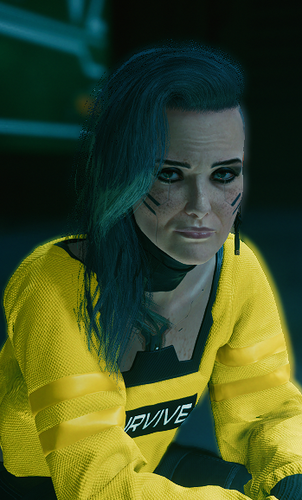
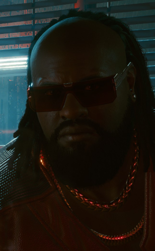

Johnny Silverhand, nacido originalmente como Robert John Linder, es un personaje de toda la serie Cyberpunk, así como un Rockerboy influyente y el cantante principal de la banda Samurai antes de la ruptura en 2008. Un ex-veterano militar estadounidense que definió el movimiento rockerboy como lo que es hoy. Fue la figura más destacada que luchó contra el corrupto gobierno de Estados Unidos y las Megacorporaciones. Johnny concentra la mayor parte de su ira en la Corporación Arasaka. Es carismático y bastante encantador. Sin embargo, también se sabe que Johnny es irracional, impulsivo y un manipulador que a menudo se describe como terrorista.
Jaquito Welles, más conocido como Jackie, fue un personaje del videojuego Cyberpunk 2077. Fue uno de los primeros puntos de contacto de V, así como el compañero del jugador durante varias misiones. Hablaba español y no amaba a los carroñeros. Valoraba la amistad, la lealtad y la familia por encima de todo. Eventualmente planearía mantener a su propia familia y vivir en el lujo, pero se impacientó porque esto todavía era un sueño difícil de alcanzar.

T-Bug, también conocida simplemente como Bug, era una netrunner en Cyberpunk 2077. Era una conocida de Dexter DeShawn y también había trabajado con V y Jackie Welles. En cuanto a los netrunners, es difícil encontrar a alguien más profesional que Bug. Su consistencia y perseverancia le han traído respeto y confianza en el campo. Como dicen los mercenarios: si Bug no puede hacerlo, ¿quién puede?

Si quieres un cromo decente, ve a Vik's. Mientras que otros lugares pueden parecer interiores de naves espaciales cruzados con habitaciones zen, su clínica rippderoc no tiene sentido y no bombardea a los clientes con logotipos corporativos. Si eres amable, incluso podría darte una cerveza con tu anestesia antes de empezar a cortar. Viktor Vector es en realidad una de las leyendas vivientes de Night City, un hecho que ha estado tratando de que la gente olvide durante años. Es un hombre de principios, un tipo duro de la vieja escuela de las calles para quien el honor y la moral se forjaron en el club de boxeo Night City Devils.

Rogue Amendiares era un Solo y luego se convirtió en uno de los mejores Fixers en Night City. Ella es dueña del famoso Afterlife. En su juventud fue una mercenaria profesional, hoy es la reina de los arregladores. Una de las últimas leyendas de Night City que es más que historias transmitidas. A diferencia de sus amigos de los buenos tiempos (léase: Johnny Silverhand), Rogue hace más que arreglárselas: dirige el Más Allá y, por definición, casi toda la red de mercenarios de Night City.

Dexter DeShawn, comúnmente conocido como Dex, era un conocido arreglador en Night City. En 2077, había regresado recientemente a la ciudad después de pasar unos años fuera de la red. Nunca había trabajado personalmente como mercenario antes de convertirse en reparador, pero no lo había necesitado gracias a su carisma y buen ojo para el potencial. Dex es uno de los mayores reparadores de Night City. Es un gran problema, tanto literal como figuradamente. Se dice en la calle que hubo complicaciones en su último trabajo, pero esa es la naturaleza del negocio, ¿no? Además, cuando alguien como Dexter DeShawn tiene un concierto para ti, no haces preguntas, solo lo agitas.
